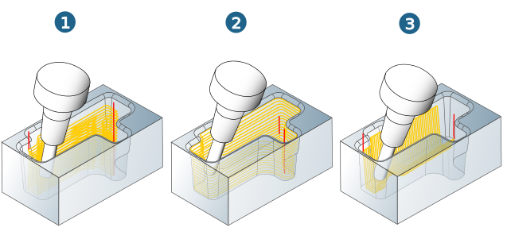
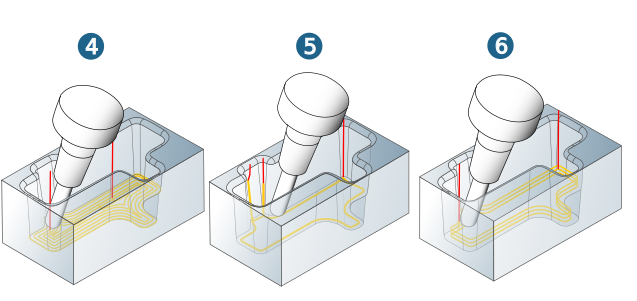
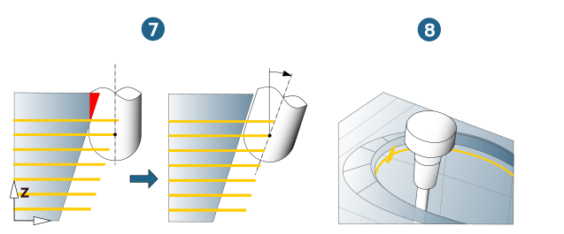
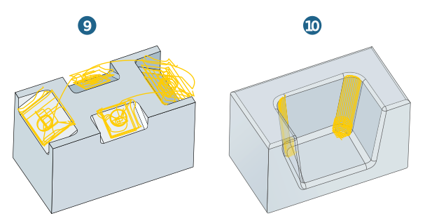

11.2. Cavity Milling
The cycles in the cavity machining package are primarily used for 5-axis machining of cavities and steep domes without undercuts for which unfavorable process parameters result in 3-axis machining.
With regard to the moving behavior of the axes, we must differentiate between the following three methods:
-
Fixed inclination: Calculation of NC paths with a fixed tool inclination in the entire machining area.
-
Simultaneous machining: Calculation of NC paths with simultaneous movement of all 5 axes. Depending on the cycle, the following inclination strategies are available: Automatic, Radial Z, Manual curve and Offset curve.
-
Automatic indexing: Calculation of NC paths with automatic division into segments with a fixed axis position as well as simultaneous movement of all 5 axes for the transitions between segments.
Overview of cycles
5X Z Level Roughing (1):
Machining cavities in 3D Z Level Roughing mode with collision avoidance. If collisions occur, an automatic transition to a 5X strategy occurs.
5X Z Level Finishing (2):
Machining a plane or pocket of steep surfaces with smooth transitions between the machining levels.
5X Profile Finishing (3):
Detail machining across surfaces for flat and/or slightly curved surfaces. Usability restricted to 5-axis roughing. Multicore support improves performance during toolpath calculation.
|  |
5X Equidistant Finishing (4):
Machining of floor areas in cavities as well as flatly curved surface formations with smooth transitions between the individual toolpaths.
5X Rest Machining (5):
Rest Machining includes all strategy variations of 3D machining. The additional simultaneous tool inclination reduces the required cutting length of the generally thin tools.
5X Free Path Machining (6):
Free Path Milling performs collision-checked machining along a freely specifiable center point path with a multiple axial infeed. It is possible to machine undercuts.
|  |
5X Rework Machining (7):
5-axis machining is calculated for any prior reference job. Toolpaths that are hidden due to collisions can therefore be machined using a 5-axis strategy. The automatic collision check ensures absolute collision avoidance for the selected tool.
5X Cutting Edge (8):
Machining of 3D cutting edges with undercuts lacking guide surfaces. Automatic calculation of the tool inclination and automatic indexing.
|  |
5X Optimized Rest Roughing (9):
Removing of rest material by manual adaption of the tool orientation with the help of plane surfaces or automatic tool orientation by definition of an angle range for the B and C axis. Flexible combination of collision avoidance and index machining.
5X Corner Rest Machining (10):
Removal of rest material in vertical corners and adjacent bottom surfaces. Protects the upper model edges with an automatic milling surface extension. Optimized strategies with higher material removal at the top area of vertical corners as well as Z level machining with low-volume material removal for rest material close to the bottom. By using the user defined values, the cycle searches automatically for a collision free inclination.
|  |